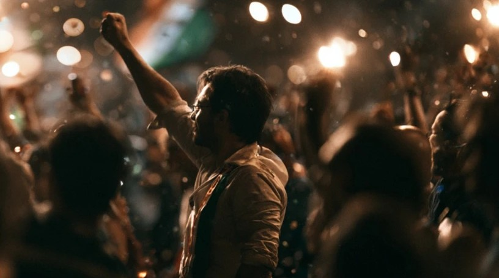

Socio-Political Essay Manoj Ashodia 20 July
The Dance of Un-Democracy

On the Streets of New Delhi
Something shifts inside you when you witness a 12-year-old frail girl ruthlessly thrashed by a fully-guarded stout cop just by being present at a spot where she shouldn't have been. A few meters away, a beautiful teen girl is shielding her brother from cruel blows of the cops, absorbing some hits herself. Not too far away, a 50-year-old scrawny man cups his forehead, as blood trickles out between his fingers. Another helpless man squatting in the middle of the road, shrieking in pain, helplessly gawking around, mourning the rusting of democracy in the greatest democracy on Earth.
These were just a few of the countless scenes I was a firsthand audience of on 20th July, in the heart of the national capital of my country, India. A crowd of thousands was in shambles, walking blearily like a headless chicken, trying to not confront the very men and women they paid salaries to through taxes for their own protection, the cops and the Rapid Action Force. That's what the taxpayers are — collateral damage of an ideologically precarious government. The taxpayers, the fuel in the system. And the students, the bearers of responsibility to usher India into a bright future, are the fodder for the regime to flex its power.
Innocent brave fools that they are. As if the CAA-NRC protests and Farmers Agitation against the same regime weren't a lesson enough. This government has no ears. It only has fangs to stick into your veins and suck out every last drop of blood, leaving you drained of life force. You stare too long into the abyss; sometimes the abyss doesn't stare back — it hits you with a stick and tear gas.
Nobody asked the youth to show up at a protest that has all the inklings to ruffle the feathers of the ruling regime, and hence, violence, the final resolve of any cowardly idiot with a gun? And the regime never fails to 'not' surprise us. Government-sponsored violence has become a parody now, a mockery of sorts.
The peaceful protest was met with grotesque brutality. A son went home last night with bruises all over his body, his heart still pounding, his legs still wobbly, to his father who proudly voted for his child's bullies in 2014, in 2019, and again in 2024. Millions of fathers, and their brainwashed adult children, and their children's adult children helped the Bully Regime with a landslide victory never seen before in the history of Indian democracy.
Condemned to humiliation, poverty, corruption, and dangerously self-respect-deficient, the Indian populace caved in to the zeitgeist and the lapdog mainstream media and helped the regime indisputably rule over the 1.4 billion for twelve years. The warnings were there in plain daylight. But when the soothing cold wind blows, who cares if it's the precursor of a flood?
And we thought fascism was an anachronism.
The Hindu upper-caste appeasement using Muslim-sponsored threats as a tool to sway masses towards them worked. Two gullible, religion-sensitive generations that were before us thought it was for the greater good of the country, and decided to make a former Muslim-genocide accused man, Narendra Damodardas Modi, lead the country into the future. What did that future look like? Nobody had the foresight to see. The soft non-Hindu targets — Umar Khalid, Sonam Wangchuk — were easy to portray as the nation's enemies.
But times change, and when the monsters become too relaxed in their monstrosities, a chink in the armour materialises. Modi miscalculated one major aspect of his subjects. Indians live in extremes. Our cinema teaches us there's only black or white, there's only Ram or Ravana, there's only a hero and a villain, there's only Dharma and Adharma. The very same India that once revered the regime began to turn against it. The regime shirked away from the fact that when push comes to shove, their worshippers will waste no time becoming their predators. And the time is nigh!
Is Modi standing too deep into his own reverence that it's almost impossible to shake him?